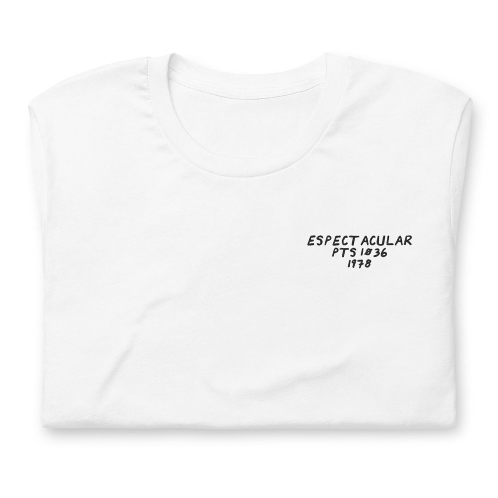
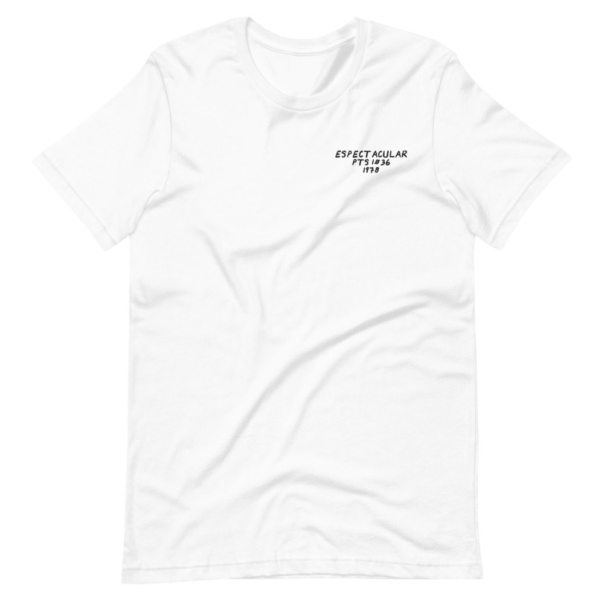

Juan Gabriel – Espectacular
Recorded in London.
LP · Pronto PTS 1036 · 1978
Ungraded, checked before it ships
Comes with its own shirt: a white tee embroidered on the chest with its title, catalog number and year in my handwriting. Pick a size at checkout. It’s made for you and ships on its own.


Buy $58
Play a track
Tracklist
- ¿Dónde Estas Vida Mia?3:12
- Es Mejor Decir Adiós2:26
- Yo Sé Que Está En Tu Corazón3:02
- Mi Fracaso2:40
- No Me Importará Tu Olvido4:13
- Aunque Te Enamores3:32
- Dame Dame3:05
- Canción Para No Olvidar3:00
- Cuando Escuches Mi Canción2:56
- Adios Amor, Te Vas4:13